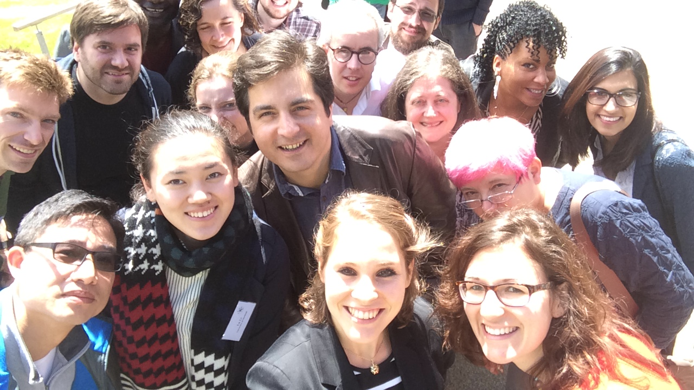

{kind=link}
Welcome!
We are excited about the success of our one-day conference “Origins and transmission of culture: An interdisciplinary approach” held on the 28th of May 2015 at the University of Birmingham.
Culture refers to any socially learned and shared behavioral patterns and is thus not restricted to extant humans. The study of culture encompasses the fields of biology, archaeology, psychology, and anthropology. It is essential for researchers across these disciplines to meet and discuss their work.
We are a group of postgraduate students from the University of Birmingham based in the Departments of African Studies and Anthropology (Nimrita Rana) and the School of Psychology (Elisa Bandini, Eva Reindl) with a shared interest in culture. With our conference, we aimed at bringing researchers with different backgrounds together to promote an interdisciplinary discussion on culture, its origins and transmission, and the methods used by the different disciplines.
Several experienced researchers were invited to talk about how culture is defined by their discipline and which methods they use to study its origins and transmissions. We expected to foster cross-disciplinary thinking and to provide a great networking opportunity for postgraduate and senior-level researchers to create and deepen fruitful academic links.
We invited students, post-docs and professors from all departments to exchange their views and think about how their work connects to other academic disciplines. Postgraduate students presented their work in the format of talks or posters.
The conference took place from 9 am to 7 pm on Thursday 28th May, 2015. Talks and poster sessions were held at Sportex (the School of Sport, Exercise & Rehabilitation Sciences Building of University of Birmingham).